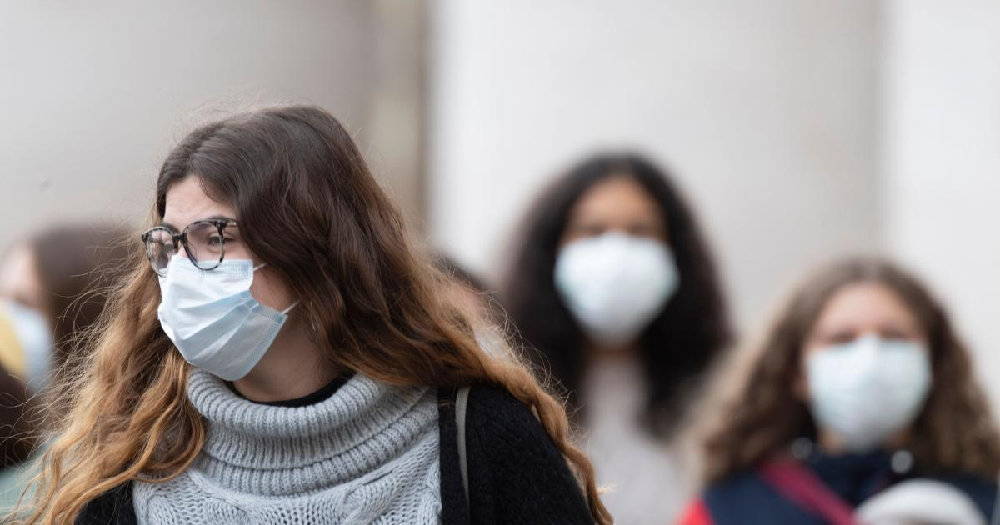
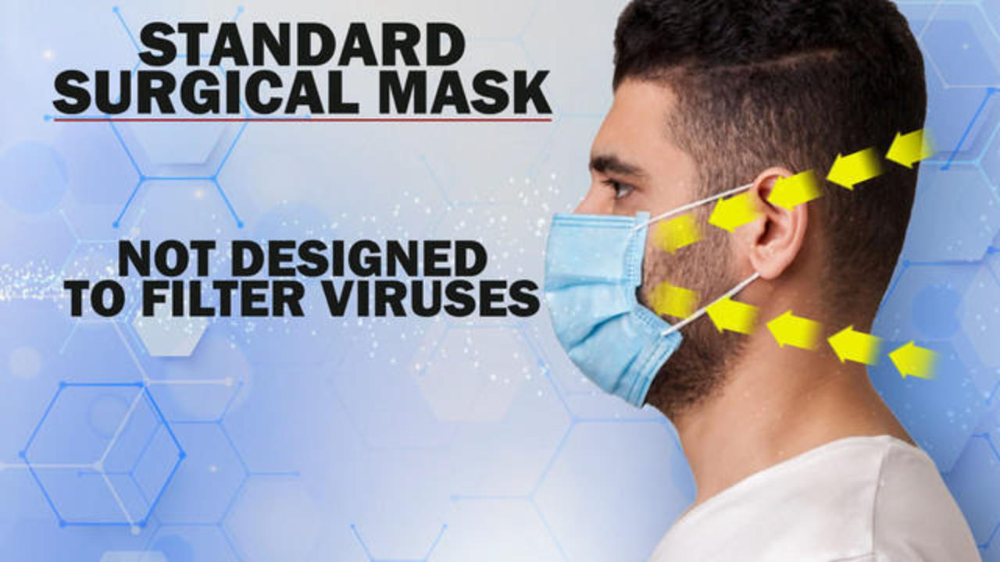
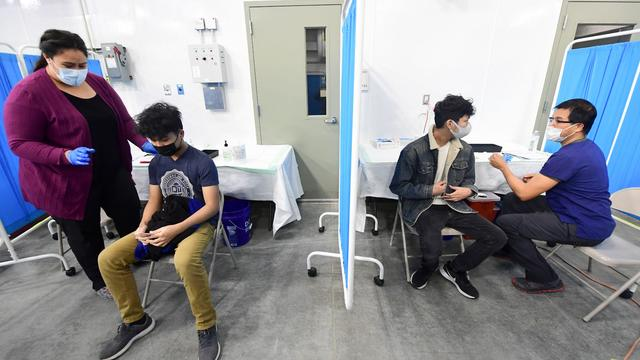
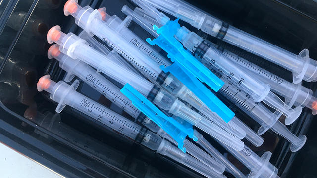
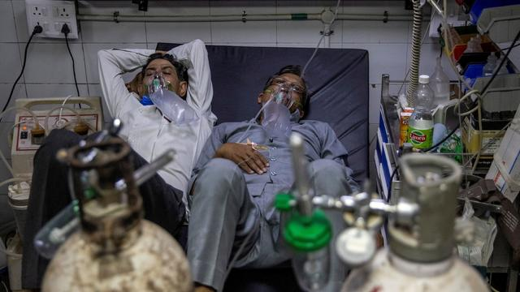

Should you wear a face mask to protect against coronavirus?
Editor's note: Health officials' views on wearing face masks have shifted as the outbreak spreads.On Friday, April 3,
President Trump announced
that the CDC now recommends Americans wear a 'basic cloth or fabric mask,' not a medical-grade mask, in public.
New coronavirus cases are continuing to pop up worldwide.The COVID-19 disease has now been confirmed in more than 50 countries, and the U.S. Centers for Disease Control and Prevention has asked Americans to be prepared for the illness to spread in the U.S.
The face mask industry is booming amid concerns.Prices of disposable face masks are spiking online as supplies run short.Prestige Ameritech, the largest surgical mask manufacturer in the U.S., said this week that it's struggling to keep up with demand for its products.
But the Centers for Disease Control and Prevention says it 'does not recommend that people who are well wear a facemask to protect themselves from respiratory diseases, including COVID-19.'
'Facemasks should be used by people who show symptoms of COVID-19 to help prevent the spread of the disease to others,' the CDC's website says.'The use of facemasks is also crucial for health workers and people who are taking care of someone in close settings (at home or in a health care facility).'
The U.S. Surgeon General put it even more emphatically, tweeting: 'Seriously people — STOP BUYING MASKS!'
All U.S. adults now eligible for COVID-19 vaccine
Teacher raised $41K to help others.He now owes $16K to IRS
Moderna plans to have third vaccine booster shot ready by fall
Some long-haul COVID patients report vaccines are helping
India's COVID 2nd wave is a tsunami, and it's taking a grim toll
More
He explained, 'They are NOT effective in preventing general public from catching #Coronavirus, but if healthcare providers can't get them to care for sick patients, it puts them and our communities at risk!'
Seriously people- STOP BUYING MASKS!They are NOT effective in preventing general public from catching #Coronavirus, but if healthcare providers can’t get them to care for sick patients, it puts them and our communities at risk!https://t.co/UxZRwxxKL9— U.S. Surgeon General (@Surgeon_General) February 29, 2020
Dr.Frank Esper, a pediatric infectious disease specialist at the Cleveland Clinic, explained the circumstances when some really sick people should wear a mask.
'If they are coughing, if they are feeling like they have symptoms, we do ask them to put on mask when they are coming to our waiting room or ER or into a public space,' he said.'It helps prevent the spread of infection.'
Esper and other experts say washing your hands frequently is the best way to prevent the spread of infectious illnesses like coronavirus or, more commonly, the flu.The CDC advises washing your hands often with soap and water for at least 20 seconds, or use an alcohol-based hand sanitizer that contains at least 60% alcohol if soap and water are not available.
You should also avoid touching your eyes, nose and mouth with unwashed hands, avoid contact with sick people, cover your mouth when you cough and sneeze, and disinfect objects and surfaces frequently, the CDC said.
Pictures taken around the world show some people wearing surgical face masks in public while others appear to be wearing respirators, which the CDC says are used to reduce a wearer's risk of inhaling hazardous airborne particles, gases or vapors.
The CDC says it 'does not recommend the routine use of respirators outside of workplace settings (in the community).Most often, spread of respiratory viruses from person-to-person happens among close contacts (within 6 feet).CDC recommends everyday preventive actions to prevent the spread of respiratory viruses, such as avoiding people who are sick, avoiding touching your eyes or nose, and covering your cough or sneeze with a tissue.'
Health and Human Services Secretary Alex Azar addressed the issue of different kinds of masks on Wednesday before a House Appropriations subcommittee.He was asked about N95 masks, which are respirators that the CDC says filter out at least 95% of airborne particles.These masks require proper fitting and training to work effectively, and officials do not recommend that the public use them.
Azar said people mistakenly have a sense that 'the mask' is the 'be all, end all of either preparedness or response activities.'
'It's an element in our armamentarium, mostly for health care workers,' he said.'And that's that N95 mask that's actually fitted.It has to be carefully fitted, and it can protect the worker.'
Disposable surgical masks also are not recommended for people unless they're sick or caring for someone who's ill.
Azar said wearing masks 'could actually sometimes be more harmful to you than not wearing a mask, because if it's not fitted right you're going to fumble with it.You're going to be touching your face, which is the No.1 way you're going to get disease, is unclean hands touching your face.'
'Basic public health hygiene — washing hands, and extended time for soap and water, not touching your face, coughing into your elbow — these are the best things for flu season, for common cold, for novel coronavirus that any of us can do for preparedness,' he said.
So far, the new coronavirus has sickened tens of thousands of people around the world.Most cases have been in China, but it has spread to other countries, too, and South Korea, Italy and Iran have reported significant daily jumps in cases.
There are only a handful of confirmed cases in the United States.
Following the SARS virus outbreak in the early 2000s, which also originated in China, researchers in Australia wanted to test data that suggested transmission of the viral respiratory infection could be reduced with the use of face masks as well as other infection control measures.
The study, published in the International Journal of Infectious Diseases in 2008, found that masks were 80% effective in protecting against clinical influenza-like illness when worn consistently — but there was a catch.The researchers noted that 'compliance with mask use was less than 50%,' meaning more than half the people in the study did not actually keep wearing them as directed.
The study found there wasn't much difference between the two types of masks tested, P2 respirator masks (comparable to N95 masks) and surgical masks.
Posted On: 2020-03-03T00:00:00
Posted By: Caitlin O'Kane





Content Date: 2020-03-03
Download Date: 2021-04-21
Document ID: L0C04ASR4